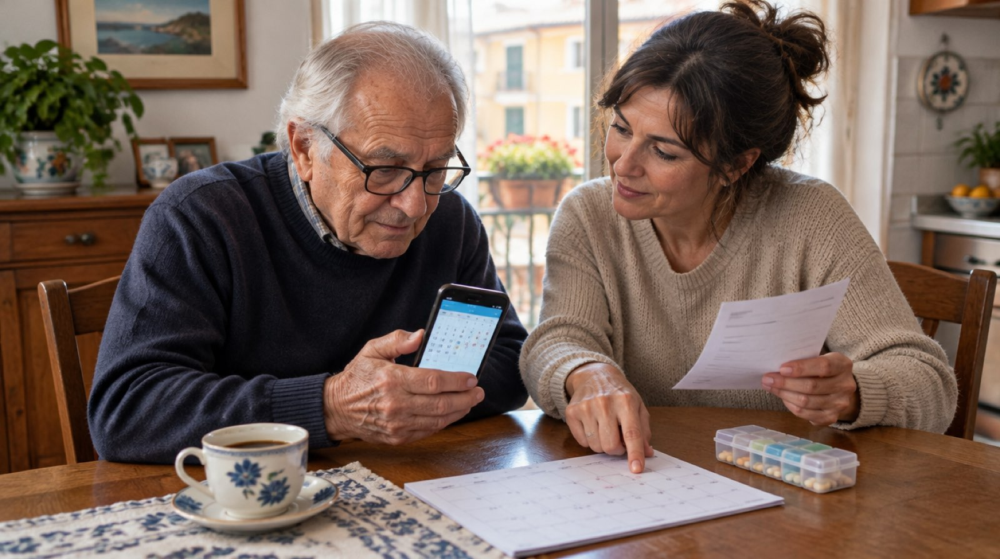

Il CUP ti ha dato una data lontanissima? Con la classe di priorità della ricetta calcoliamo il tempo massimo garantito e prepariamo la richiesta all'ASL: devono trovarti loro un posto nei tempi, al costo del ticket.
I tempi del Piano nazionale 2026-2028: U 72 ore, B 10 giorni, D 30 o 60, P 120, dal primo contatto con il CUP.
Il percorso di tutela è un diritto: l'ASL deve trovarti la prestazione, anche in libera professione o nel privato accreditato, senza costi oltre al ticket.
Nessun dato sanitario inviato. La lettera la mandi tu, dalla tua PEC.

agenti civici · La visita nei tempi
Fotografia illustrativa generata con intelligenza artificiale.